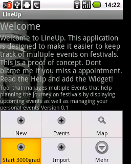
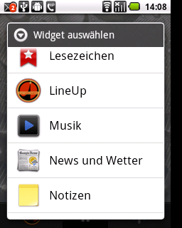
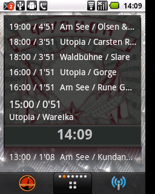
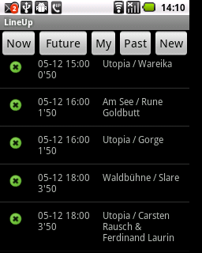
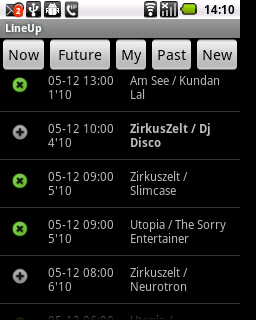
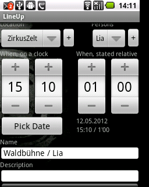
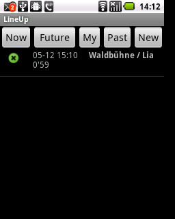
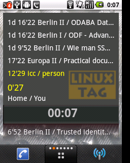
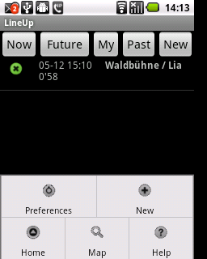
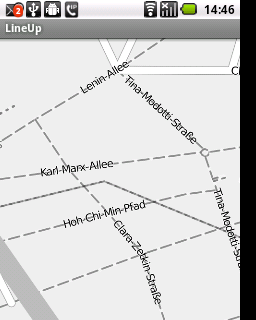

LineUp is a Android App that is designed to make timing on a Festival more easy
The Idea emerged because of the preference to 'meet in an hour' rather than 'at 15:00'. Especialy when being on a festival and time is not the thing that matters
The current state of the software is beta, it means that it should already work as expected, but unless you report bugs this aint certain. Also the Data that is input cannot yet be exported or shared, so you could enter the complete Festival 2012, but your friend next to you also has to do this. Test it, Try it. Request features and we will implement a sync-schedule in the meantime, that you can update with the little bandwith that will be available on a Festival.
Download the App and install it on your device. It has been tested on LG-P350, a very small and inexpensive device - something that can be lost or damaged on a festival.
After installing the Widget you should open it and Download/Initialize the database with events. This Events represent a 4-Track festival from 2009, that happens to start Today at 17:00
Now you can add the desktop Widget to a Homescreen that provides enough space
 And the upcoming events should be displayed
When you tap on the widget, you will see the Events that are currently happening (+- 15minutes)
Tapping On a Event will activate or deactivate it. Deactivated events will not apear on the Widget, but you can see it in the Futures List
The Buttons on the top allow you to filter the Events.
 Events can be deleted by long-tapping a event and select 'Delete' from the context menu
To add new Events you use the New Button
New Events are useful when you want to meet persons or attend Events that are not on the Schedule
You can create your own places and Persons you meet. The last used Person & Place is always selected when you enter the next event
The Time of a Event can eigher be set using 'Real' time and a date as well as by setting a offset from now. So its super-easy to meet in 45 minutes
The Events you entered can be displayed with the 'My' filter. The Events are also highlighted in the Future List as well as on the Widget
 The App provides features that are also useful on a festival, like a Map that works in offline-mode
 Have fun!